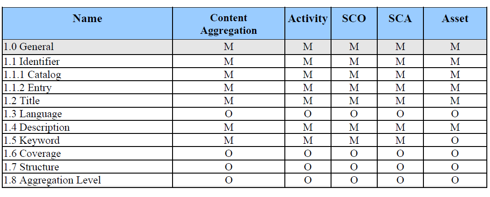

La inclusión de instancias de metadatos junto con el objeto de aprendizaje tiene como objeto fundamental el facilitar información estándar sobre los contextos de utilización del mismo, aumentando así su reusabilidad. Sin embargo, no en todos los contextos se utiliza IEEE LOM de la misma forma, ni es necesario hacer un uso completo de todas las posibilidades del estándar.
IEEE LOM establece diferentes niveles de conformidad con el estándar, diferenciando entre instancias conformes y estrictamente conformes:
- Una instancia de metadatos es estrictamente conforme con el estándar LOM si sólo incluye elementos del esquema base de LOM.
- Una instancia de metadatos conforme con el estándar LOM puede incluir elementos extendidos.
Un perfil de aplicación es un subconjunto de elementos LOM que se define para su utilización en una comunidad, contexto u organización determinados. Estos subconjuntos están formados por el conjunto de elementos o categorías de metadatos de IEEE LOM elegidas y por una especificación acerca de si la introducción de información para cada una de ellas es obligatoria u opcional. De este modo, los perfiles de aplicación pueden tener elementos conformes o añadir elementos que no aparecían en los esquemas originales de IEEE LOM. A menudo suelen también incluir nuevos términos en los vocabularios controlados de IEEE LOM, especificar distintas cardinalidades para alguno de los elementos, restricciones de obligatoriedad en ciertos términos, o cualesquiera otras restricciones o modificaciones que no existen en IEEE LOM.
Existen multitud de perfiles de aplicación publicados. Posiblemente CanCore (perfil de aplicación canadiense centrado en aspectos semánticos y de interpretación en lugar de en requisitos técnicos), UK LOM Core (perfil creado por la comunidad de práctica del Reino Unido con ánimo de identificar prácticas comunes en el uso de metadatos), LOM-ES (iniciativa de las administraciones españolas para promover y facilitar iniciativas de desarrollo de los repositorios de recursos y materiales educativos a nivel nacional) y los perfiles incluidos en la especificación SCORM4 (Activity, SCO, SCA y Asset) son los más ampliamente conocidos y maduros a nivel global. A la derecha se representan parte de los perfiles de aplicación definidos en SCORM (Content, Activity, SCO, SCA y Asset). En ella se aprecia la definición de los requisitos de cada uno de los 5 perfiles de aplicación, para cada uno de los cuales se listan los requisitos correspondientes a cada categoría, donde una “M” indica que el elemento es obligatorio (mandatory), mientras que una “O” indica que el elemento en cuestión es opcional en el perfil indicado.
